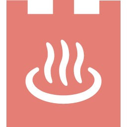
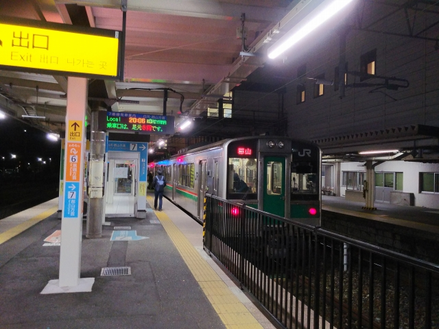
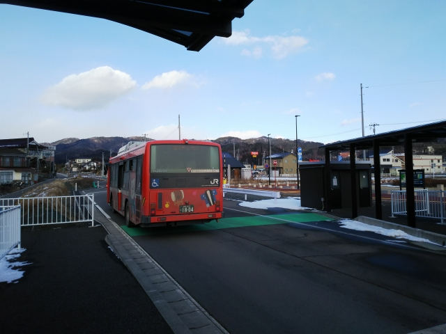

2021（R3）1月7～10日 大沢温泉

金はないけど時間はあるこの冬、今までやってそうでやってなかった、青春１８きっぷ２枚で東北遠征する旅を企画。第一候補の青森の古遠部温泉は他に泊
り客がいないのでひとりの客は無理と断られ（キレてないで）、第二候補の肘折温泉に決めて予約もしたのに、大雪で最寄の新庄まで行くＪＲ線が全て事前
に運休決定で無念の断念。さすがに雪の影響はないであろう太平洋側の大沢温泉にターゲットを変更して、向かいました。

静岡は島田に到着。東京までは飽きるほど鈍行乗り継ぎで行ってるけど、
今回は珍しく豊橋から浜松までもクロスシート車。でも、さすがにその
先は味気ないロングシート車しかありまへん。
その後、まさかの強風の影響で、熱海から先のダイヤが大乱れ。本来な
ら熱海から宇都宮まで１本でボックス席に座って移動するところが、東
京で打ち止めに！
なので品川で山の手線に乗換え。ちょうど、この３月で定期運用から離
脱する１８５系が停まってました。
上野からは高崎線で大宮まで急いだ好判断で（自分で言う？）、遅れ
ていた湘南新宿ラインに乗ることが出来て、宇都宮には予定通り到着！
宇都宮からは黒磯まで進み、ここ黒磯で新白河行に乗換え。

新白河駅到着。とうとう東北エリアに侵入や。かなり寒いっす。郡山行
に乗りかえ。また味気ないロングシート車っす。
郡山到着。といっても去年の夏来たとこやけど。さすがに雪が積もりだ
したで。
そしてようやく今日の目的地の福島に到着。寒っ！
雪はしんしんと降り続いてます。明日、ちゃんと動くんかいな・・・

２日目。無事定時運行中。
そーいや五輪は福島でもやるんやね。
仙台行きに乗り込みます。
仙台からは、利府支線に寄り道。
新幹線の車両基地の横を通ります。
利府駅。
この線、実はもともとは日本鉄道が建設した東北本線で、昭和３０年代
にこの駅から先が廃止された経緯があります。
まぁまぁ人も乗ってます。
北への旅は続きます。
小牛田着。
乗り継いで一ノ関到着。とうとう岩手県です。
そしてようやく、大沢温泉の最寄駅の花巻に到着しました。
一面雪の花巻駅。
大沢温泉まではバスで移動ですが、待ち時間の間に、保存車両を見に
行こうと。
おっ、見えてきた見えてきた。まっすぐ方向の道は、廃線跡やろな。
じゃ～ん！花巻の馬面電車っす。
ナローと言いながらさすがに幅が狭すぎへん？バス１台より輸送量少な
いで、これ。
いよいよ大沢温泉行のバスに乗り込みます。
結構、お客さんいるけど、みんな大沢温泉？

バスから見た花巻市街。
無事大沢温泉到着。
降りたのは私一人でした。よかったよかった。
門松も、まだ飾ってる。このつららがいいっすよね。
湯治棟に泊まります。築２００年とのこと。こたつがうれしい。
館内に飾ってた、花巻電鉄の写真。
あ～これに乗って来たかった！
早速、名物の露店風呂へ
雪見温泉、最高っす。
ただ、ちょっと熱めやな。
今回は使わんかったけど、共同の炊事場もあります。１０円ガスコンロです。
しかし、とにかく寒かった！最低気温、－１５℃って・・・
翌日は快晴です。北陸のべた雪と違って、ふかふかで気持ちいい雪です。
今日の予定、実はギリギリまで迷ってました。本当は浦さんに対抗すべ
く、平泉に行くプランもあったんやけど、昨日平泉が大雪やったのを見
て、直前に予定変更っす。
花巻から南下します。
早池峰山がきれいに見えます。
金ヶ崎駅到着。
実はここには重要伝統的建造物群保存地区に指定されている「武家屋敷
城内諏訪小路」というエリアが、駅から歩いて１５分ぐらいのところに
あります。

快晴の雪景色はキレイなんやけど、街並みを見るという意味では、雪の季節はイマイチやったですね。
次の目的地へさらに南下します。
一ノ関からは、大船渡線に乗換えです。この車両は、良い。
一路、気仙沼を目指します。海に近づいても、雪は残っとります。
気仙沼駅到着
駅にバス？
奥は列車がとまっとるけど、手前に線路はなく・・・
そうなんよね、海沿いはＢＲＴになったんよね。
昔、一度来てるはずの気仙沼駅やけど、記憶は全然ないわ。
かなり山側にあるので、ここから海は見えまへん。
では早速、ＢＴＲの大船渡線で一駅先に行ってみます。
ほこりだらけのバスが来ました。洗ったれよ。外全然見えへんがな・・・

鹿折唐桑駅に到着。
ここから海のほうに歩きます。
駅前からは、空き地か新しい建物しかありません。
気仙沼港。
漁船が瀬戸内よりデカくて本格的！
南気仙沼駅まで歩いてきたけど、この駅前も空き地と新しい建物だけ
ですね。
待合室もきれいになってて、煖房が入ってるのはありがたい。
このあと、一旦気仙沼駅に戻って、折り返しの前谷地行きに乗り込み
ます。
気仙沼線のＢＴＲ専用線化はまだ完了してないようで、工事中のところ
もちらほら見えました。
ローカル線のＢＴＲ化、選択肢の一つとしては十分アリやと思うんやけ
ど。
ＪＲの運賃体系が残るのはメリットやで。
土曜とはいえ、終点の前谷地まで乗ってたのは３人だけ。あとは地元の
中高生だけやったからなぁ。
最終日、朝の仙台駅。今日は常磐線経由で帰ります。
常磐線は、津波被害の大きかったところが新線になって復旧しています。
一応乗っとかんと、全線完乗って言われへんからな。
かぶりつきで見てました。
原ノ町で水戸行に乗り換え。
福島第一の最寄駅の双葉駅。
黒いのが除染のフレコンバックなのかどうかは不明
廃墟とまではいかへんけど、人の気配はほとんどせん駅前でした。

今日はダイヤ乱れもなく、順調に戻れました。
富士あたりで見えた富士山。雪、全然ないやん！
ところで、このページ作成中にムーンライトながらの廃止決定のニュース
が飛び込んできました。３４５Ｍ時代から何度も乗っていた大垣夜行もと
うとう廃止とは、悲しい限りです・・・